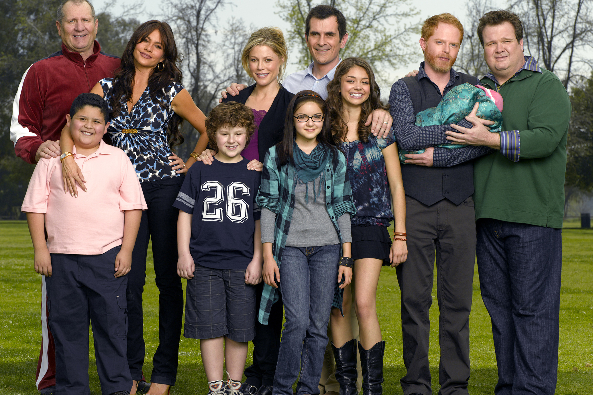

"Modern Family" is everything. It's not just a TV show—it's a cultural phenomenon that forever changed how we see family dynamics on screen. Imagine a family with all the quirks, absurdities, and genuine love that could exist in any family, and amplify them to an uproarious degree. That's "Modern Family." It's the perfect blend of sitcom brilliance, heartwarming moments, and satirical commentary on modern life. You’ve got the Dunphys, the Pritchetts, and the Pritchett-Tuckers—each family member so uniquely fleshed out, each with their own eccentricities and imperfections that make them irresistibly lovable. Take Phil Dunphy, the goofy, perpetually optimistic dad who thinks he's cooler than he is, but somehow manages to be the coolest. Then there's Claire, the fiercely organized, sometimes uptight mom who balances the chaos with grace (and a little bit of sarcasm). Cameron and Mitchell—oh my god, where do I even start? The perfect duo. Their witty banter, their over-the-top emotions, their obsession with their daughter Lily—it’s beyond iconic. The show has layers, layers, layers—it's not just about laughs, it’s about family relationships that are deep and rich and always evolving. You watch and you learn, you laugh and you cry, and suddenly you realize you’ve been emotionally invested in these people like they're real. They are real. It's a mirror to society, showing how love and dysfunction intertwine, how families can come in all shapes, sizes, and orientations, but they’re all rooted in the same fundamental thing: love. And don’t get me started on the mockumentary style. The talking-head interviews that let each character reveal their innermost thoughts, the way they break the fourth wall and look directly at the camera—it's pure genius. It gives it that sense of intimacy, like we, the viewers, are part of their world, living and breathing right there with them. The quotes! Oh god, the quotes! "I’m like a ninja, I’m invisible." Phil Dunphy—you cannot tell me that's not a legendary line. Or when Cam bursts out with “We’re not gonna take it! We’re not gonna take it! NO!” in the middle of a crisis. The show is chock-full of moments that are simultaneously hilarious and poignant. Honestly, if "Modern Family" were a person, it would be that one friend you can’t imagine your life without. It's timeless, relatable, and endlessly rewatchable. It’s iconic. Period.
Why is everybody hooked on Modern Family? Oh, where do I even begin? It's practically impossible not to be! Here's the thing: Modern Family is like that magical combo of comfort food, a perfect playlist, and a heartfelt hug all rolled into one. And the fact that it was everywhere—on TV, in memes, in casual conversation—made it an undeniable part of pop culture. But let’s break down why the show is so addictive: 1. Relatable Characters, Perfectly Flawed Everyone sees themselves in at least one of the characters. Maybe you're a hopeless romantic like Phil Dunphy or an overprotective parent like Claire. Maybe you’re just as neurotic as Mitchell or as exuberantly extra as Cameron. These characters feel like real people, and their struggles, triumphs, and quirks are so relatable. You can’t help but root for them, because they're a reflection of ourselves—trying to navigate life's messiness, while still showing up for each other. 2. Perfect Balance of Humor & Heart The show isn't just a series of gags (though, trust me, it’s filled with them)—it’s about how families support, love, and even annoy each other. The humor comes from that perfect balance of situational comedy and character-driven antics. One moment, you’re in stitches from a wild situation, and the next, you're a little teary-eyed as you realize how much the family genuinely cares for each other. It’s one of those shows that both makes you laugh and tugs at your heartstrings, sometimes in the same scene! 3. Unpredictable, Yet Comforting There's something about Modern Family that makes it so easy to watch, but never predictable. Sure, we know there will be a mix-up or misunderstanding at some point, but it’s the twists and payoffs that keep us hooked. It's comforting because you always know there's going to be a resolution, but the journey is filled with delightful surprises that never feel forced. It's a formula that works, and we can't get enough of it. 4. The Mockumentary Style The show’s mockumentary format, with its talking-head interviews, adds a layer of intimacy. You feel like you're on the inside of these characters' lives, and the characters themselves are all too eager to share their unfiltered thoughts. It’s a genius move because it makes us feel like we’re in on the joke, and it allows for some of the most hilarious moments when characters reveal things that are totally different from their public persona. 5. Diverse Storytelling We can’t forget that Modern Family doesn't just focus on one type of family—it’s a multi-layered exploration of different kinds of families. The show dives into everything from blended families to same-sex marriages, offering a narrative that feels inclusive and true to the complexities of modern-day life. It doesn’t just entertain—it educates and challenges societal norms, while still managing to be fun. 6. Timeless Themes, Timeless Humor Family dynamics are eternal. The show may be grounded in its time—pointing out things like social media trends, generational gaps, and cultural shifts—but the themes are timeless. Who hasn't had a family get-together that turned into chaos? Who doesn't have an awkward cousin, a sarcastic parent, or a lovable grandparent? The humor may reflect modern life, but the emotions and situations are universal. And that’s why you can rewatch the series years later and still laugh at the same jokes. 7. Ensemble Cast with Killer Chemistry The chemistry between the cast is electric. You can tell that the actors genuinely enjoy playing off one another. That camaraderie translates to an onscreen dynamic that is irresistible. Whether it's Gloria’s bold Latin energy clashing with Jay's gruffness or Phil’s dad jokes landing in Claire’s eye rolls, their interactions feel lived-in, organic, and so much fun to watch. The ensemble is so strong that even the secondary characters (like Lily, Manny, Lily's uncle!) feel important, like they’re contributing to the overarching family story. 8. Emotional Investment By the end of the show, these characters aren’t just fictional—they’re family. Modern Family does a remarkable job of making you feel emotionally invested in their growth, from awkward teen years to full-blown adulting. You watch their kids grow up, fall in love, and face life's tough choices, and you can’t help but feel a sense of pride in their journey. 9. It’s a Comfort Zone In a chaotic world, sometimes we need something familiar, something that doesn’t challenge us too much but still gives us joy. Modern Family becomes that “go-to” show when you want to unwind. It's so easy to fall into its rhythm because it feels like coming home. You know these people, you get their jokes, and you feel at ease in their world. 10. Iconic Catchphrases And of course, who could forget the catchphrases? From Phil's quirky “Phil’s-osophy” to Cam’s exasperated “I’m going to kill you, Mitch,” to Gloria’s over-the-top "You don't mess with me, Jay!"—these lines are etched in pop culture history. They stay with you, become part of your own vocabulary, and often pop up in conversation when you least expect it. To sum it up: Modern Family has this undeniable magic that hooks us because it’s just… real enough to feel like a reflection of our own families, and fun enough to provide the perfect escape. It's relatable, hilarious, heartwarming, and completely addictive. And let’s face it—who doesn’t love a family who messes up, laughs together, and somehow finds their way in the end? The show’s perfect mix of wit, warmth, and relatability makes it impossible to stop watching.
I totally get it—Modern Family has that magnetic pull that just won’t let go! It's like the comfort food of TV shows—once you start, it’s so easy to keep going back for more. Whether you're rewatching your favorite episodes or catching new ones, there’s always something to love, laugh at, or even get a little teary-eyed over. The best part? The more you watch, the more you notice! You catch tiny details you missed the first time, like a throwaway line or a subtle facial expression that perfectly encapsulates a character’s personality. The humor is so layered that it's impossible to not notice something fresh every time. It's like the ultimate puzzle of jokes, character moments, and life lessons that you just want to keep piecing together. And the characters—oh my god, you know what I’m talking about. It's like they become family. Whether it’s Phil’s dad jokes or Cameron’s outlandish antics, they just get better the more you see them. You start anticipating their lines, and the payoff is always worth it. I mean, is it even possible to not laugh at a Phil Dunphy pun? It’s practically a requirement. But then there’s also the emotional hook. You get so invested in these people’s lives that you feel their wins and losses. Remember when Jay starts opening up to Manny about his vulnerabilities, or when Cam and Mitchell try to get their daughter the best birthday ever? It's moments like those that make you care about the characters on a deep, personal level. They’re not just funny—they’re real in a way that’s impossible to ignore. Plus, let’s be real—Modern Family is endlessly rewatchable because it’s a safe space. Sometimes you just need to kick back with something that doesn’t require deep concentration, but still makes you feel something. And each episode is like this perfect little burst of joy. It’s the kind of show you can throw on in the background, and before you know it, you're sucked right back into the madness, just like you were watching it for the first time. Honestly, who wouldn’t be obsessed? It’s the ultimate binge-worthy, heartwarming, laugh-out-loud, perfectly imperfect family show. You have to keep watching. The only question is—what episode are you on now?
Click Here for a Compilation